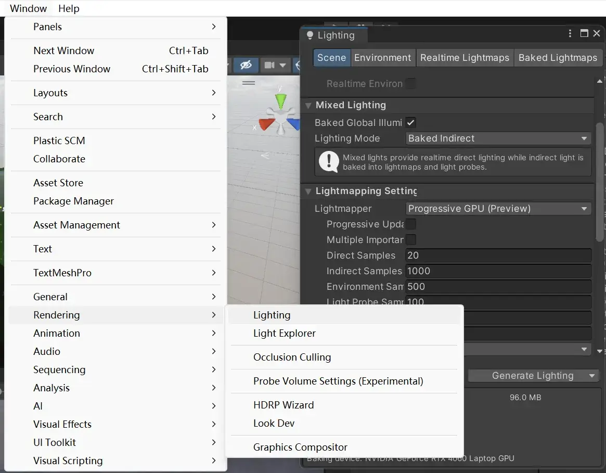
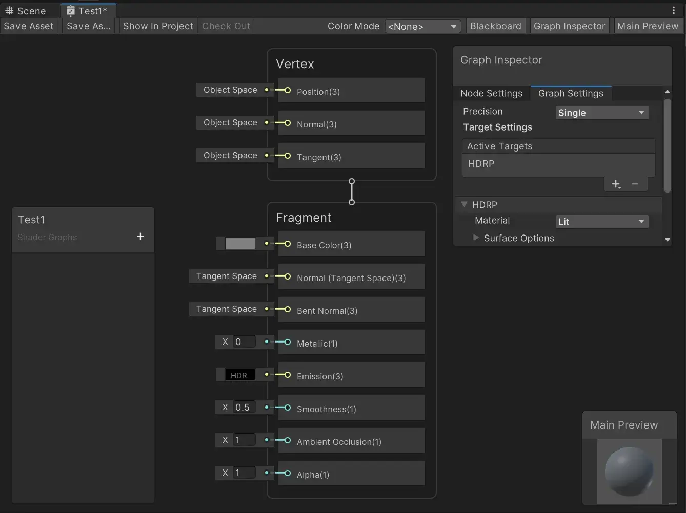

正文
第 1 章，HDRP 入门
1.1 摘要
可编辑渲染管线（Scriptable Render Pipeline, SRP）
- 高清渲染管线（High Definition Render Pipeline, HDRP）
- 通用渲染管线（Universal Render Pipeline, URP）
资源下载地址：
《枫丹白露》场景：
Visual Effect Graph（Unity 最新的 GPU 加速粒子效果制作模块）演示场景：
- [Made with Unity]-The Heretic 异教徒完整中文版_哔哩哔哩_bilibili
- [Made with Unity]-Unity实时渲染动画《Windup》完整版震撼发布！_哔哩哔哩_bilibili
1.2 离线渲染和实时渲染
传统 DCC（Digital Content Creation，数字资产制作） 工具：Maya、3ds Max、C4D、Blender……
| 属性 | 离线渲染 | 实时渲染 |
|---|---|---|
| 渲染质量 | 好 | 差 |
| 渲染速度 | 慢 | 快 |
1.2.1 建模功能（ProBuilder、ProGrid 和 PolyBrush 套件）
让 Unity 具有像传统 DCC 工具一样的建模能力。
1.2.2 Timeline（非线编工具）
就是时间轴。
1.2.3 Cinemachine（智能摄像机系统）
控制摄像机逻辑。
1.2.4 HD Post Processing Effect（HDRP 专用后期特效模块）
景深、动态模糊、高级抗锯齿、晕光等，无需等待传统流程中漫长的渲染过程。
1.2.5 可编程着色器编程工具 Shader Graph
- [Unity-Shader Graph | Zi-Zi’s Journey](/2023/10/23/Unity-Shader Graph/)
1.2.6 高级特效开发工具 Visual Effect Graph
可视化节点式特效编辑器，模拟粒子特效。
1.2.7 视频和动画输出工具 Unity Recorder
将场景以图片或动画的形式输出。
1.2.8 HDRP 针对不同材质的模拟
- 支持皮肤 Subsurface Scattering（SSS）、毛发和布料的模拟。
- 支持创建逼真的玻璃反射和折射效果。
- 支持创造模拟真实汽车清漆效果的 Clear Coat。
- 不仅可以模拟写实效果的材质，也可以实现风格化渲染，比如卡通渲染。
1.3 在 DCC 软件中准备模型资产
1.3.1 在 DCC 软件中使用的尺寸单位要与 Unity 统一
Unity 里的单位是米，Maya 里是厘米，3ds Max 里是英尺。
1.3.2 只在需要的地方使用三角面
确保性能。
1.3.3 纹理制作
- 制作纹理时，贴图的长和宽应为 2 的次方。Unity 处理长和宽为 2 的次方的纹理更高效。
- 可以考虑使用 Substance Designer 和 Substance Painer 来制作纹理，这两个工具有完全支持 HDRP 工作流的相关插件。
1.3.4 支持 FBX、USD 和Alembic 格式的资产导入
1.3.5 Unity Reflect 支持导入 Autodesk Revit 资产
从第三方软件直接导入素材。
1.4 Unity HDRP 项目设置
1.4.1 创建一个基于高清渲染管线（HDRP）的 Unity 项目
整一个 HDRP 的范例工程！
1.4.2 通过示例项目了解 HDRP 相关的概念和模块
一个 HDRP 的范例场景，包括：
-
Lighting
光照
-
Directional Light Sun
平行光，用于模拟太阳光。
-
Volumes
雾效
-
Reflection Probes
反射探针，通过对自身周围的场景进行采样，为场景提供反射信息。
-
Light Probe Group
环境光探针，为场景提供间接光照信息。
-
Local Volumetric Fog
局部体积雾
-
ShadowProxy
处理阴影
-
-
Props
道具模型
-
Structure
房间架构
-
VFX
粒子特效
-
PlayerControllerFPS
第一人称的玩家预制体，包含一个主相机。
Volumes 雾效
设为 Global 模式的 Volume，其效果默认会影响整个场景。
设为 Local 模式的 Volume，其效果影响范围由 Collider 决定。
Volume 框架将组件和设置分离，组件上的所有设置（添加的效果）由关联的 Profile 决定。
光照贴图烘培

Window-Rendering-Lignting 打开光照烘培的窗口，Generate Lighting 即可进行光照烘培。
未完成光照烘培的场景，只有直接光照。完成光照烘培的场景，具备直接和间接光照，也添加了 HDRI Sky 环境光照信息。
HDRP 配置文件（HDRP Asset）
Edit-Project Settigs...-Graphics-Scriptable Render Pipeline Settings 中可以找到 HDRP 的配置文件。这说明 HDRP 是基于 SRP 实现的。
点击 HDRP 的设置信息：
- Rendering（渲染）
- Lighting（光照）
- Lighting Quality Settings（光照质量设置）
- Material（材质）
- Post-processing（后处理）
- Post-processing Quality Settings（后处理质量设置）
- XR（XR 相关设置）
介绍几个重要的：
-
Lit Shader Mode
- Forward Only 可以提供更多的高级材质，但是相应的性能消耗较大
- Deferred Only
- Both
只有配置文件中的 Volumetric Fog 打开，Volume组件的体积雾特效才会生效。
HDRP 材质和着色器
渲染一个模型，需要将 Mesh、Material、Shader 和 Texture 组合在一起。
- Mesh 用于表现模型形状，一个 Mesh 可以有多个 Material。
- Material 用于控制模型不同部分的材质表现。
- 每种 Material 都与一个指定的 Shader 相关联。Shader 是一段代码，包含了用于计算屏幕上每个像素点颜色的具体算法。Shader 进行计算的时候会考虑当前场景的光照信息以及在 Material 上提供的具体配置信息。
Lit Shader 是 HDRP 常用的 Shader 之一，在 Surface Inputs 的参数集合中可以指定各种 Map，这些 Map 所关联的就是 Texture。
- Base Map：用于为模型提供 Albedo 颜色信息。
- Mask Map：使用一张将信息存储到 RGBA 四个通道中的纹理，来一并控制：
- Metallic（金属反光-Red 通道）
- Ambient Occlusion（环境光遮蔽-Green 通道）
- Detail Mask（细节遮罩-Blue 通道）
- Smoothness（光滑度-Alpha 通道）
- Normal Map：法线贴图。为模型表面添加更多模型上不存在的细节。
如此可以创建一个 HDRP 的 Lit Shader Graph。

就可以用可视化的方式编辑 Shader。
Surface Options 下的 Material Type 有 6 种材质类型可选择：
-
Subsurface Scattering
次表面散射：模拟皮肤、树叶、蜡烛、玉器及瓷器釉面等。
-
Standard
标准：用于表现大部分材质，此工作流把物体分为金属和非金属两类。
-
Anisotropy
各向异性：模拟拉丝金属表面或者天鹅绒。不同的角度观察，会出现不同的高光现象。
-
Iridescence
彩虹色：当观察角度或者光照角度发生变化时，物体表面的颜色会发生渐变（渐变色）。这非常适合用于模拟肥皂泡、彩虹色金属表面和昆虫的翅膀等。
-
Specular Color
高光颜色：可用于表现大部分材质，属于 PBR 材质流程制作流程中的 Specular Workflow（Metallic 与 Specular 工作流程的比较 - Unity 手册）
-
Translucent
半透明：半透明材质可以和一张 Thickness Map 配合使用，用于模拟半透明物体。
Edit-Rendering-Materials-Covert All Built-in Materials to HDRP，可以将材质升级成 HDRP 材质！虽然一般都需要升级完成后在手动微调。
HD Render Pipeline Wizard（HDRP 设置窗口）
Window-Rendering-HDRP Wizard 中检查 HDRP 的配置。

都是✔，则 HDRP 配置正确。
Render Pipeline Debug（HDRP Debug 窗口）
Window-Analysis-Rendering Debugger，调出渲染的调试窗口。
只显示漫反射贴图。
只显示法线贴图。
只显示环境光屏蔽贴图。
- HDRI Pack | 2D 天空 | Unity Asset Store 这个集合中包含 7 个 8192 x 4096 的 HDR 图片。加载它！
Window-Rendering-Look Dev，调出可以单独显示环境和预制体的面板。
右侧面板 Environment 中 New 一个 Library，在面板左下角里添加场景，将天空盒拖入场景中，再将场景拖到视图上。
最后将预制体拖入视图，即可观察预制体在视图中的渲染效果。但是好像不太听话，容易黑屏……